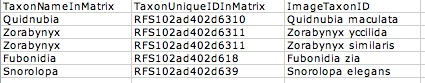
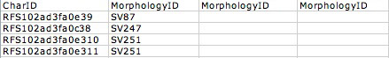
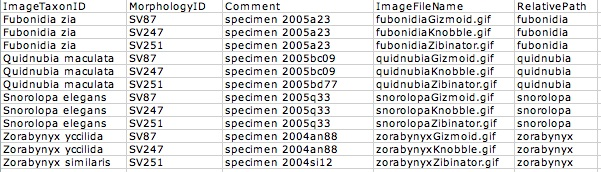
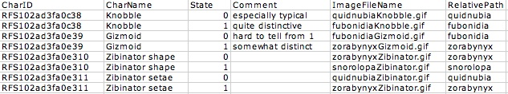
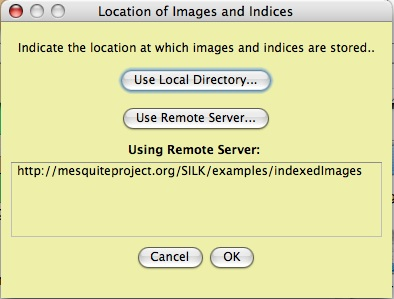
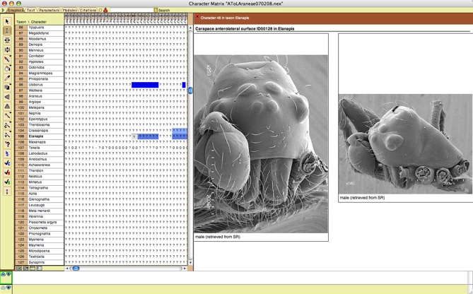
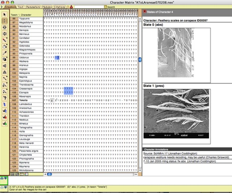

|
This is a quick guide to use of the SILK package. This SILK package was described in: Ramírez, M.J., J.A. Coddington, W.P. Maddison, P.E. Midford, L. Prendini, J. Miller, C.E. Griswold, G. Hormiga, P. Sierwald, N. Scharff, S.P. Benjamin, & W.C. Wheeler. 2007. Linking of digital Images to phylogenetic data matrices using a morphological ontology. Systematic Biology. 56:283–294
SILK has two main functions:
This is accomplished by setting up repository of images that contains an index file,separate from your data file, that tells SILK where to the images. Then, you tell SILK how to find this repository, so that it can find and display the images.
SILK's website is http://mesquiteproject.org/packages/SILK.
This page explains how to set this up. Contents:
THIS version of SILK requires Mesquite version 2.5. It is incompatible with version 1.12 and earlier.
As of version 2.7 of Mesquite, you can install SILK by selecting Check Now for Notices/Installs in the File menu, and entering the following URL:
http://mesquiteproject.org/packages/SILK/install.xml
Mesquite's installer will then lead you through the installation process.
You can also install SILK by hand. Download it at http://mesquiteproject.org/packages/SILK/SILK.zip. When you unzip it, you will find it makes a directory "silk". Please move "silk" inside the mesquite folder within your Mesquite_Folder. Thus, when you have moved it, you should have "silk", within "mesquite", within "Mesquite_Folder". The next time you start Mesquite, it should load SILK (a SILK banner will appear in the startup window).
Source code for SILK may be found at http://svn.mesquiteproject.org:8080/repository/SILK/
SILK also comes with example files. You can find them in the examples folder here. We recommend you try them.
NOTE: in the near future we hope to provide direct database links as an alternative to the index file system.
In the meantime, SILK uses a simple set of index files to help Mesquite find the images.
Your images and their indices should be arranged within a single directory as follows:
Your images come from a particular specimen or species, and display a particular views of the specimens that may show one or more characters. Your data file contains a data matrix of taxa (or terminals) by characters. To link the images to the cells of the matrix, SILK needs to know how these things correspond: which specimens or species belong to which rows (taxa) of the data matrix, and which views display which characters. SILK also needs to know where to find these images. The index files contain this information.
The basic vocabulary is:
Each index is a simple tab-delimited ASCII text file. You can make this in Microsoft Excel for example by saving a table as "Text (tab-delimited)". Each file consists of
There are 4 index files in total. Three are needed to show images at each cell (TaxaToTerminals.txt, CharsToMorphology.txt, and ImageData.txt). One is needed to show images of typical examples of the character states (CharStateImageTypification.txt).
This table indicates how the formal taxa in the NEXUS data file's matrix correspond to the "Image taxa" (see basic concepts).
The TaxonNameInMatrix is the name of the taxon in your NEXUS data file. The TaxonUniqueIDInMatrix is the taxon's unique ID stored within the NEXUS data file by Mesquite. The primary identifier used by SILK is the ID; if no match is found with that then the name is used as a backup. We recommend you turn on and use Mesquite's facilities for unique ID's. See the section on unique IDs in Mesquite..
The ImageTaxonID is your ID for a specimen or species of your image. This is to could be a name or some other ID; you might have obtained it from your database, or from the label on the image.
This table, for instance, says that the image taxon Quidnubia maculata refers to the taxon "Quidnubia" in the data matrix. You may attach more than one image taxon to a matrix taxon by using multiple rows for the same matrix taxon, as shown below. You may also attach more than one image taxon to a matrix taxon by adding extra columns, each one with the header "ImageTaxonID".

This table indicates how the formal characters in the NEXUS data file's matrix correspond to the standard views or standard anatomical regions. This is used because often, a single image taken of a standard view can show more than one character. In this case several characters would all make reference to the same MorphologyID (standard view).
The CharID is the ID of the character of the matrix. SILK uses only the CharID; it does not use the character name. Thus you must use Mesquite's facilities to store ID's for the characters. See the section on unique IDs in Mesquite..
The MorphologyID lists the standard views that are useful for observing this character or the standard anatomical region that contains it. You can list more than one, as long each column has the same heading "MorphologyID".
You may link more than one MorphologyID to a character by using multiple rows for the same character or by adding extra columns, each one with the header "MorphologyID".

This table indicates where the images for each ImageTaxon and standard view (MorphologyID) can be found. The ImageTaxonID must match one from the TaxaToTerminals table. The MorphologyID must match one in the CharsToMorphology table. The comment can be anything.
SILK uses the RelativePath and ImageFileName to locate the files. Thus, if the image directory is /Users/wmaddisn/SILK/ImageDirectory then SILK would look for the image for Morphology SV87 in image taxon Fubonidia zia in /Users/wmaddisn/SILK/ImageDirectory/LowRes/fubonidia/fubonidiaGzmoid.gif for the low resolution image, and /Users/wmaddisn/SILK/ImageDirectory/HighRes/fubonidia/fubonidiaGzmoid.gif for the high resolution image. The Relative path is relative to your image directory.

This table is used only for the state typification via the States Images Panel. The CharID has already been explained. The CharName is currently not used to identify the character, but may be used in display. For each state of the character, you indicate an image file name and a relative path for the image that typifies that state.

For SILK's functioning, characters need and taxa should have "unique" id's assigned to them within Mesquite. The reason for this is to avoid problems if a taxon or character later changes names, even slightly.
In Mesquite taxa and characters can have identification codes attached that persist even if the taxa or characters are renamed or reordered.
Mesquite can generate these automatically, both when taxa and characters are created, and later. The ID's that Mesquite generates are not formally globally unique identifiers (e.g., they are not LSID's) though support for LSID's may come in the future. Rather, the Mesquite-generated ID's are "probably unique" and of a simple format. You can ask Mesquite to generate these unique ID's whenever taxa or characters are created by selecting the menu items in the Defaults menu. This is a global preference, and we recommend you turn this option on and leave it.
If you have taxa or characters that are already created, you can assign them ID's by going to the List of Taxa window or List of Characters Window, turn on the column Unique ID's. Then, choose Fill Missing Unique IDs in the drop down menu when you touch the column heading.
One disadvantage of turning on on Mesquite's generaton of unique ID's is that PAUP* will then refuse to read the file. However, you can insist that PAUP* read the file by calling PAUP*'s "set noerrorstop" command. Alternatively,you could export the file as Simple NEXUS format before running with PAUP*.
Some users may prefer to have high and low resolution versions of their images with slightly different names. SILK permits them to have different prefixes. If, for example, all your low resolution images have the prefix "LR_" in front of the filename (as indicated in ImageData.txt and CharStateImageTypification.txt) the you can create a simple ASCII text file called "_prefix.txt". It should contain only a single token, the prefix. If the prefix contains NEXUS punctuation, it's best to put it in single quotes. Thus, the file could contain only:
'LR_'
If this file is placed in LowRes, then all of the low resolution image file names will be assumed to begin with LR_. Thus, SILK would look for the low-resolution image for Morphology SV87 in image taxon Fubonidia zia in /Users/wmaddisn/SILK/ImageDirectory/LowRes/fubonidia/LR_fubonidiaGzmoid.gif
Similarly, a file _prefix.txt can be put into HighRes to indicate the prefix that all high resolution image names have.
After the index files are created and the images are sorted into the appropriate directories, and the data file is made and filled with the appropriate unique ID's then in order to display the images at the cells you need only tell the data file where to find the images and indices directory. Do this by going to the Indexed Image Location menu item in the Matrix menu of the Character Matrix Editor. A dialog box like this will appear:

You can either choose Use Local Directory or Use Remote Server. If you choose to use a remote server, then you will be asked to enter a URL. For example, the example index and image files for SILK are distributed with SILK, but are also present on a server at:
http://mesquiteproject.org/SILK/examples/indexedImages/
To ask that the images at cells be displayed, select Show Cell Info Panel in the Matrix menu of the Character Matrix Editor. Here is an example showing images at cells for a spider data matrix:

To find out whether there are any images attached to cells, go to the Matrix menu, Color Cells submenu, and choose "Databased Images Present". The cells colored blue have images linked.
To ask that the images be displayed showing typical images of particular character states, select Show State Info Panel in the Matrix menu of the Character Matrix Editor. Here is an example of its use:

Recall that you can attach images to objects as annotations without the SILK package using the annotations panel of the Character Matrix Editor and the State Names Editor.
Copyright © 2006-2008 W.P. Maddison & M.J. Ramírez